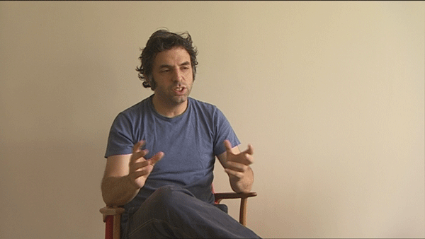

-
Loneliness, Fiction, Cinema: Interview with Etgar Keret
by Jessica Loudis April 13, 2010
Etgar Keret and Shira Geffen’s short film What About Me? opens on an Israeli border guard lazing about a checkpoint in the middle of the desert. When a salesman and his donkey approach, the guard informs the man that his papers aren’t in order—it’s a purple day—and that he’ll have to come back the next morning. “What about me?” the donkey asks. His papers are purple, and he’s allowed through. “Don’t worry, Nasser, by ten tomorrow I’ll be back,” the donkey remarks as he crosses the border. The man disappears, and as camera pans out, and the audience sees that the checkpoint is just that—a gate without walls, and a young soldier monitoring the vast expanses of nothingness on either side.
As a nod to Kafka’s parable Before the Law, the four-minute film—like much of Keret’s work— bears more than a little resemblance to its literary predecessor, give or take a talking donkey and chatty dog. Like Kafka, Keret is less interested in characters than in situations, and his protagonists usually find themselves accepting surreal and unexplained events (crazy-glued apartments, dead babies) with a sense of casual resignation. In Hat Trick, a story from Keret’s 2008 collection Girl on the Fridge, a bumbling magician is delighted and horrified when gruesome new items begin materializing in his hat, and in Knockoff Venus, an office worker develops a crush on the Roman goddess Venus, who’s taken a day job as a low-level copyist. The emotions undergirding Keret’s stories are familiar ones—loneliness, love, fear—but rather than addressing them outright, Keret literalizes them elsewhere, creating worlds in which the unspoken punctures reality with a bizarre and disturbing force.
Keret is widely known in Israel as one of the country’s leading writers, and six years after first being translated into English, he’s been gaining momentum on this side of the Atlantic as well. In addition to Girl, Keret’s published five other books (including two comics) and produced a handful of scripts for TV and film, several of which—including What About Me— were co-written with his wife, Shira Geffen. In lit-fanboy circles, Keret is best known as a leading practitioner of flash fiction—quick, tightly-managed stories often executed like jokes—and in cinephile crowds, he’s recognized for his abstract and darkly funny meditations on serendipity and death. Unlike other Israeli writers of his generation, Keret’s writing tends to avoid religion or politics, allowing him sidestep the country’s historical hang-ups while investigating the kinds of weird subjective experiences that tend to push people towards God or government in the first place.
Last week, BAM paid homage to Keret’s eclectic body of work with its own kind of flash retrospective, opening with his 2007 film Jellyfish (winner of the 2007 Camera d’Or at Cannes) and closing two days later with Wristcutters a film set in a post-suicidal purgatory mysteriously populated by the likes of Will Arnett and Tom Waits. As an author whose writing relies heavily on images, Keret’s stories are well suited for translation onto the big screen, and the series didn’t disappoint. In Jellyfish, visions of children emerging from the ocean and newlyweds trapped in claustrophobic hotel rooms are paired with quieter, more haunting details—a shirt twitches almost imperceptibly in a photograph, and a new bride’s lingerie reappears in storefront window. While these touches often go unnoticed on the page, they leave a subtle impression on the viewer, overlaying films that are already cryptic with an uncanny sense of visual déjà vu.
Keret is more of an atmospheric filmmaker than a narrative one, and his films downplay linearity in favor of carefully orchestrated ambiance. In $9.99, a film that sometimes feels like the claymation version of Happiness, characters drift around a Sydney apartment building like ghosts, silently craving a greater sense of purpose. More often than not, their searches take them in the wrong direction: a boy falls in his love with his piggy bank, a man removes his spine to please his girlfriend, and another character resorts to the discount self-help books referenced in the film’s title. Like much of Keret’s work, $9.99 tows the line between creepy and comic, but ultimately ends on a note of understated optimism, leaving viewers baffled but free of the post-Solondz urge to spend the evening in a closet with a bottle of whiskey.
To call Keret a postmodern writer isn’t wrong, but it’s not fully accurate, either. As he’s said in interviews, Keret is the product of Israel’s schizophrenic culture and a family that’s already the stuff of fiction (his brother is a militant anarchist and his sister an ultra-Orthodox Jew). A sensitivity to nuance, in short, is embedded in his personal DNA, and one gets the impression that it didn’t take a literary movement to get him there. “Our subjective experience is not a realistic one,” Keret told Ira Glass at BAM last week, and if his writing is based on any kind of realism, it’s true stories that are nearly unbelievable, the kinds of rare and singular moments that elude the one-to-one relationship of reality and language. In chasing these moments, Keret creates his own symbolic vocabulary, letting the reader (or viewer) know what he’s getting at without the baggage of context or explanation. After all, sometimes it just takes is a talking donkey to convey how arbitrary things really are. Before he came to BAM, I caught up with Keret to talk about fiction, cinema, and one very unusual laptop bag.
—————————————————————
Jessica Loudis: First things first. How did you get into writing?
Etgar Keret: I started writing when I was nineteen. It was during the three years of my compulsory army service. I had forty-eight hours shifts in a computer unit and during one of those shifts I wrote my first story, called Pipes.
JL: What was the story about?
EK: It was about a guy who builds those curled up pipes and rolls marbles through them. One day he builds a pipe that when he rolls marbles in they don’t come out the other end. He believes the marbles are disappearing and decides to build a big pipe in the same shape and crawl into it until he disappears.
I guess I really wanted to disappear those days.
JL: Your short stories tend to begin with these surreal, yet weirdly logical premises. How do you usually come up with the ideas behind them?
EK: I don’t do it on purpose; it’s just the way I think. When I begin a story it usually comes from a character, a situation, a visual image or even a sentence—it is never from what I’d define as a premise.JL: So what would be an example of something just popping into your head and you turning it into a story?
EK: I was once in a bar and a drunk guy waved an empty bottle and threatened to break the bottle on my head. It was really noisy there and I misheard him saying that he was going to put me inside that bottle. A friend of mine with better hearing and stronger survival instincts said we should run out of there. While we were running this image of me being shrunk and kept inside a bottle stayed in my mind and I found myself writing a story. It wasn’t about the trapped in the bottle bit, more about loneliness and unfulfilled love (guess that was what I’ve experienced during that time) but that image of a guy inside a bottle appeared in it.
JL: What made you decide to start making films?
EK: Loneliness. Writing fiction is a pretty lonely business and I wanted to meet people and collaborate with them.
JL: Is for writing for film different from the way you usually work? Have there been any unexpected challenges?
EK: Writing short fiction is a completely internal process—there’s no interaction with the world around you. Working on film is completely the opposite, for good and for bad. What you learn as a filmmaker is that the friction with reality can lead your film away from the original plan, but that isn’t always a bad thing.
JL: Are there any specific authors or filmmakers who have influenced your writing?
EK: Many. The biggest influence was Kafka. It was really comforting to discover someone who is even more scared of life than I am.
JL: What are you currently reading/watching/listening to?
EK: I just discovered “The Wire” a few months ago. I’ve just finished watching the fourth season. This series is a master class in storytelling.
JL: You seem to have traveled a lot over the past few years to promote your books and films—what’s the strangest thing that’s happened to you while you’ve been on a book tour?
EK: When I landed in Perth I took somebody else’s laptop bag by mistake. He found me and after giving me my laptop back showed me he had $40,000 in cash in the bag.JL: Wow. Did he say what the money was for?
EK: He was very polite but said that he would rather not tell why he was carrying all that money in the bag.
JL: What Are you working on at the moment?
EK: I’ve just finished the editing process of a collection of short stories that will be published in Israel in a month’s time.

1 Comment
Q&A With Etgar Keret « Black Octavo
[...] Q&A With Etgar Keret Cross-posted to Idiom [...]